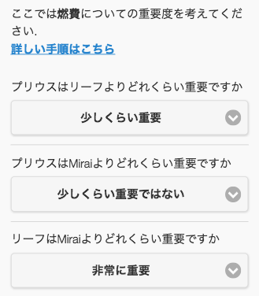
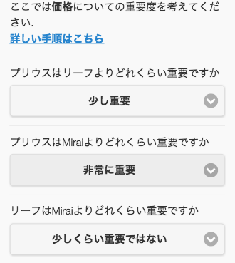

重み付けとは？
評価基準または代替案を２つ１組のペアで比較して、
「AがBに対してどれくらい重要か」と評価します。
代替案の場合は一つの評価基準だけ考慮して評価します。
「自動車の購入」で代替案が「プリウス」「リーフ」「Mirai」の場合、
次のように評価します。
評価基準「燃費」のもとでの評価

評価基準「デザイン」のもとでの評価

評価基準または代替案を２つ１組のペアで比較して、
「AがBに対してどれくらい重要か」と評価します。
代替案の場合は一つの評価基準だけ考慮して評価します。
「自動車の購入」で代替案が「プリウス」「リーフ」「Mirai」の場合、
次のように評価します。